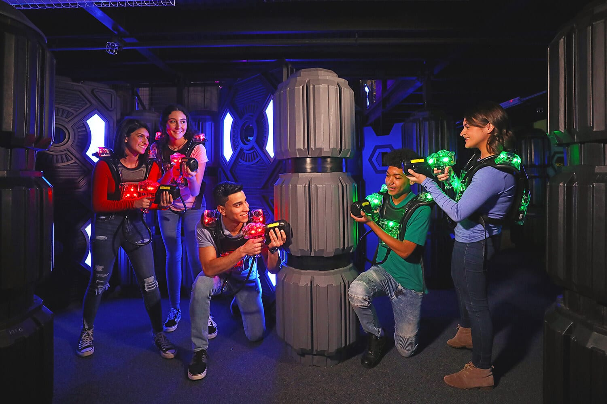

Intro
If you're interested in Wargames,but don't like some of the trouble an Airsoft gun may have , such as safety factors,cost, laws & regulations etc. There're still many types of Wargames that you can enjoy.
I'll rate each type of war games as such:
Airsoft
- Performance 4/5 (projectile range, accuracy,etc)
- safety 2/5 (gameplay safy&public safety)
- Cost 2/5 (higher the cost for starters, lower the score)
- realistic 5/5 (able to mimic the thrill of actual gunfight)
- variation 3/5 (able to play the game in different ways)
(Though I called them "Alternative Wargames" but in no way they're inferior to Airsoft, and each of them are equally fine hobbies)
Nerf
Nerf blasters, probably the most common toy guns, shooting darts made of foam & rubber, it is safe for kids to play indoors, and safe enough to bring outdoors without raising much suspicion.
Many of the nerf wars in Taiwan are played in the local parks, playset cost is relatively cheap,and play styles are versatile.
You can build your very own nerf guns, or even join the game with only a toy sword in your hand.
- Performance 1/5
- safety 4/5
- Cost 4/5
- realistic 2/5
- variation 5/5
scroll to the top
Gel blaster
Shooting soft water-absorbing gel balls, Gel blasters were developed in China as an alternative of prohibited Airsoft guns. The gun& rules are similar to Airsoft,but less powerful,bit safer and cost a bit less.
- Performance 3/5
- safety 3/5
- Cost 3/5
- realistic 4/5
- variation 4/5
scroll to the top
Paintball

Paintball is a competitive team shooting sport in which players eliminate opponents from play by hitting them with spherical dye-filled gelatin capsules called paintballs that break upon impact. Paintballs are usually shot using low-energy air weapons called paintball markers that are powered by compressed air or Co2. It's easier to determine hits with paintballs, but cost is also higher, newbies usually have to borrow paintball markers form the Venue.
- Performance 3/5
- safety 3/5
- Cost 1/5
- realistic 3/5
- variation 1/5
Lasertag

Laser tag is a recreational shooting sport where participants use infrared-emitting light guns to tag designated targets. Infrared-sensitive signaling devices are commonly worn by each player to register hits and are sometimes integrated within the arena in which the game is played. This is probably the safest wargame since there's no physical projectile being shot (that's a minus for me though)
- Performance X/5
- safety 5/5
- Cost 5/5
- realistic 1/5
- variation 2/5
scroll to the top